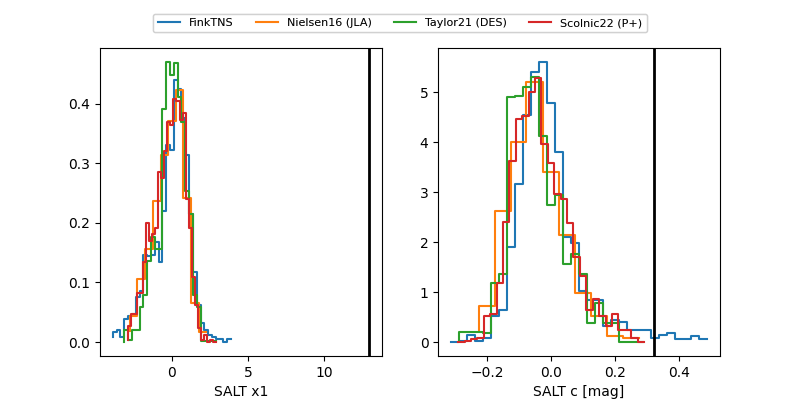

FINK: ZTF25abomstg
Lasair: ZTF25abomstg
ALeRCE: ZTF25abomstg
TNS: 2025wwu
YSE: 2025wwu
ZTF25abomstg (ztf,fink)
2025wwu (tns,yse)
equatorial (ra, dec) = (264.6759,+73.51370)
galactic (l, b) = (104.5853,+31.06792)

last ztfg=20.08, ztfr=19.94
1 ztfg, 8 ztfr detections